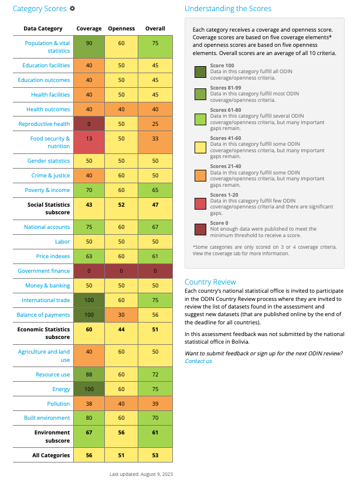
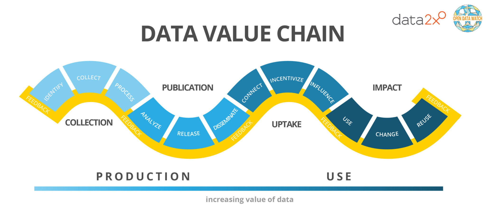
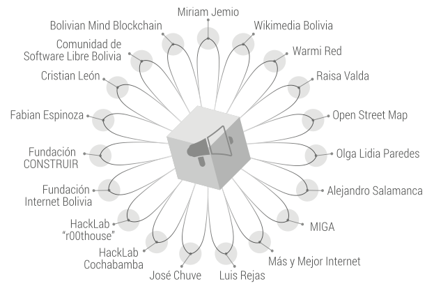
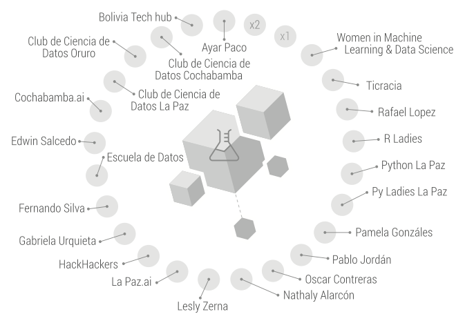
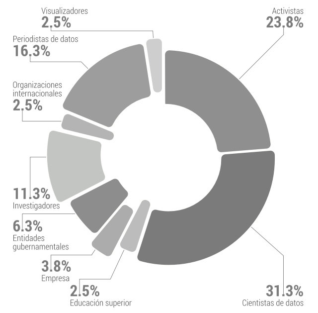
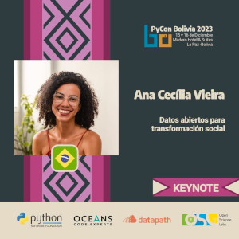

Datos abiertos para transformación social
En este artículo encontrás el contenido y las diapositivas de la charla “Datos abiertos para transformación social” presentada en la PyCon Bolivia 2023.
Hace aproximadamente 12 años, las naciones de América Latina y el Caribe se comprometieron a divulgar sus datos con el objetivo de promover la transparencia, el desarrollo y la innovación en diversos ámbitos internacionales, a través de la Alianza para el Gobierno Abierto. En la actualidad, contamos con la participación de 16 países latinoamericanos como signatarios de esta alianza. No obstante, el progreso de la agenda en la región ha sido bastante lento en los últimos años. La apertura de datos públicos por parte de los gobiernos resulta fundamental para fortalecer nuestras democracias en la era digital.
Contar con información es crucial para la toma de decisiones, especialmente para que sean bien fundamentadas. Aunque pueda parecer evidente, esto no siempre fue así. En la actualidad, los datos son omnipresentes, presentes en abundancia y diversidad, desempeñando un papel fundamental al orientar nuestras acciones en diversas áreas. Se han convertido en una parte integral de nuestra rutina diaria. Adicionalmente, un gobierno que destaca por su alto índice de transparencia y datos abiertos fomenta la innovación, el desarrollo económico sostenible y la formulación y expansión de políticas públicas eficientes y efectivas. Estos aspectos son esenciales para garantizar una calidad de vida óptima para nosotras.
Agenda 2030
Entonces, cómo nosotras, desde la sociedad civil, en especial como expertas y expertos en tecnología, podemos contribuir para una sociedad más justa, equitativa y democrática?
Os enseño la Agenda 2030, un plan de acción establecido por la ONU para “lograr dar respuesta a los 17 Objetivos de Desarrollo Sostenible (ODS) a favor de las personas, el planeta y la prosperidad, que también tiene la intención de fortalecer la paz universal y el acceso a la justicia” (Naciones Unidas). En la práctica es decir: que los grandes desafíos mundiales van desde el combate a la pobreza, hambre, corrupción, hasta el cambio climático.
Los objetivos 16 y 17 tienen metas acerca de dados y gobierno abierto:
Objetivo 16 - Promover sociedades justas, pacíficas e inclusivas
- 16.5 Reducir considerablemente la corrupción y el soborno en todas sus formas.
- 16.6 Crear a todos los niveles instituciones eficaces y transparentes que rindan cuentas.
- 16.7 Garantizar la adopción en todos los niveles de decisiones inclusivas, participativas y representativas que respondan a las necesidades.
Objetivo 17 - Revitalizar la Alianza Mundial para el Desarrollo Sostenible
- 17.18 Mejorar el apoyo a la creación de capacidad prestado a los países en desarrollo, incluidos los países menos adelantados y los pequeños Estados insulares en desarrollo, para aumentar significativamente la disponibilidad de datos oportunos, fiables y de gran calidad desglosados por ingresos, sexo, edad, raza, origen étnico, estatus migratorio, discapacidad, ubicación geográfica y otras características pertinentes en los contextos nacionales.
- 17.19 Aprovechar las iniciativas existentes para elaborar indicadores que permitan medir los progresos en materia de desarrollo sostenible y complementen el producto interno bruto, y apoyar la creación de capacidad estadística en los países en desarrollo.
Estos objetivos plantean nuevas metas para que nuestras instituciones se caractericen por ser más abiertas, participativas y colaborativas. Una gobernanza mejorada también representa una contribución esencial al desarrollo sostenible.
La abundancia de datos ha llevado a los Estados a desarrollar nuevas capacidades. Los datos abiertos pueden ser empleados en la planificación, diseño, seguimiento y evaluación de políticas públicas. De este modo, los Estados pueden aumentar su eficiencia y tomar decisiones más acertadas en función de los objetivos establecidos. Además, mayor interacción entre los gobiernos y sociedad permiten oportunidades de co-creación de soluciones y negocios.
Instrumentos para evaluar nivel de tranparencia de datos en los países
Hoy en día, para tratar de medir la evolución de las iniciativas de datos abiertos en los países, existen cuatro índices:
- el Barómetro de Datos Abiertos (ODB) producido por la World Wide Web Foundation;
- el Índice Global de Datos Abiertos (GODI) producido por la Open Knowledge Foundation;
- el Inventario de los Datos Abiertos (ODIN) producido por la Open Data Watch; y
- y el OURdata Index realizado por la OCDE.
Cada uno de estos índices se enfoca en distintas dimensiones de las iniciativas de datos abiertos. Nosotras tendremos en cuenta el Inventario de los Datos Abiertos (ODIN), pues es el que tiene la última edición más reciente, de febrero de 2023.
Inventario de Apertura de Datos (ODIN)
El Inventario de Apertura de Datos (ODIN) evalúa la exhaustividad de las ofertas estadísticas de un país y verifica si sus datos cumplen con los estándares internacionales de apertura. Los datos sujetos a evaluación en el ODIN son aquellos oficiales del país, los cuales se publican en el sitio web de la oficina nacional de estadísticas o en cualquier otro sitio oficial del país vinculado desde el sitio web de la mencionada oficina estadística. Los aspectos analizados por este índice son: cobertura y apertura.
Los puntajes de cobertura se fundamentan en la presencia de indicadores clave y desgloses adecuados a lo largo del tiempo y en subdivisiones geográficas.
Por otro lado, las puntuaciones de apertura se sustentan en la posibilidad de descargar los datos en formatos legibles por máquina y no propietarios. Además, se evalúa la presencia de metadatos, la disponibilidad de opciones de descarga como descarga masiva y selección de usuarios o API, así como la existencia de términos de uso o licencia de datos abiertos.
Panorama boliviano
En la clasificación global del ODIN Bolivia se sitúa en el puesto 84 con un total de 53 puntos. A continuación, se presenta un desglose detallado de las categorías investigadas:

Me ha llamado atención dos de los puntos investigados: salud reproductiva y finanzas gubernamentales. Entonces, me he profundizado en la Metodología del Índice para comprender el significado.
La categoría de Salud Reproductiva presenta una cobertura de 0 puntos. Para alcanzar al menos 0.5 puntos, sería necesario divulgar datos como la tasa de mortalidad materna, la tasa de mortalidad neonatal, la tasa de mortalidad infantil (menores de 5 años), así como las tasas de fertilidad, métodos anticonceptivos y la tasa de embarazo en la adolescencia.
Aunque existen algunos puntos en la categoría de apertura, lo publicado hasta el momento no resulta suficiente, ya que falta información crucial, como una tasa de mortalidad. La carencia de estos datos es significativa, especialmente al considerar la importancia de la salud reproductiva en el diseño de políticas públicas para mujeres. ¿Cómo podemos desarrollar políticas efectivas sin tener en cuenta aspectos fundamentales de la salud reproductiva?
La categoría de Finanzas Gubernamentales registra una puntuación de 0 en todos los aspectos. No se encuentran disponibles datos en formato abierto que cumplan con los estándares internacionales para las finanzas gubernamentales. Aunque he hallado información en el sitio web del gobierno, esta se presenta en formato de archivo PDF en lugar de un formato accesible.
Índices tan bajos por sí mismos ya constituyen material suficiente para impulsar una participación ciudadana activa. Sin datos sólidos, resulta imposible lograr que los gobiernos sean responsables por las decisiones que toman, las políticas que aprueban y la gestión del presupuesto.
Aquí es donde nosotras, expertas en tecnología y miembros de la sociedad civil informada y participativa, podemos intervenir.
En la actualidad, gran parte del desarrollo tecnológico se realiza utilizando datos como materia prima, y, por supuesto, la mayoría de estos datos son recopilados de diversas plataformas. De hecho, existe un extenso mercado de comercialización de datos. Bueno, este tema es para otra conversación. Pero, imagina si tuviéramos datos gubernamentales abundantes, confiables, de calidad y en tiempo real; ¿cuántas tecnologías cívicas podríamos desarrollar para beneficiar nuestras ciudades?
Para comprender mejor cómo podemos actuar, es interesante observar la cadena de valor de los datos. Esta fue publicada por Open Data Watch:

En Bolivia, puedes encontrar organizaciones sin ánimo de lucro actuando en cada uno de los pasos.
En 2019, la Fundación Hivos ha publicado el Mapeo de Actores de Sociedad Civil Relacionados a Datos Abiertos en Bolivia, que ha identificado cinco grupos en el ecosistema de datos abiertos boliviano: cientistas de datos, analista de datos, periodistas de datos, activistas que abogan por la transparencia y investigadores.
Destaco dos nodos en particular:
Nodos de activistas 
Nodos de científicos de datos 
Considero fundamental que colaboraremos con organizaciones de la sociedad civil para impulsar el desarrollo del ecosistema de datos abiertos. Un ecosistema robusto depende de la participación de diversos sectores. Dada la amplitud e importancia de los datos en diversas áreas de la sociedad, es esencial adoptar un modelo participativo.
Gráfico de porcentaje de grupos involucrados 
La presencia importante de cientistas de datos, ingeniera de datos y analista representa una oportunidad maravillosa puesto que somos nosotras que contamos con las mayores habilidades de procesamiento de datos de entre todos las integrantes del ecosistema. Simultáneamente, la presencia de activistas también es importante para que los datos abiertos no queden solamente en emprendimiento privados, sino que tenga carácter de beneficio público.
La primera experiencia de Bolivia con datos abiertos fue en 2013 con la realización del primer Data Bootcamp, hubo una segunda versión y luego en 2015 el 1er. Acelerador de periodismo de datos que originó pequeños proyectos periodísticos y otros varios desde la sociedad civil. En 2017 el gobierno plurinacional de Bolivia ha publicado el Lineamientos para la adecuación y publicación de datos abiertos. Muchos proyectos han sido desarrollados en favor de la apertura, uso y reuso de datos abiertos desde el gobierno y la sociedad civil. Sin embargo, según el Barómetro de Datos Abiertos de 2019, se ha observado un estancamiento en el avance de la transparencia y apertura de datos en Latinoamérica. En el caso específico de Bolivia, al revisar el Portal de Datos Abiertos, se constata que actualmente solo hay disponibles 43 conjuntos de datos abiertos. Además, estos conjuntos no se encuentran actualizados tampoco cumplen completamente con las definiciones de datos abiertos establecidas por la comunidad internacional de datos.
Te invito a sumarte a una de las iniciativas que trabajan por la apertura de datos en nuestra región, para que podamos contribuir al fortalecimiento de nuestras democracias y alcanzar una sociedad más justa y equitativa.
Organizaciones que promueven uso de la tecnología para el fortalecimiento de democracias
- Escuela de datos
- Fundación ARU
- Fundación Construir
- Hivos: people unlimited: América Latina
- ILDA
- Latinno
- La Paz ¿Cómo vamos?
- Miga: cocinas regionales
- Warmi.red: mujeres en tecnología
Citaciones
- 5 Lessons Learned from Open Data Workshops in Latin America and the Caribbean
- Aduana Nacional - Datos Abiertos
- Data Action Plan Sets Targets for 2030
- Data for Development Network
- Datos Abiertos: Bolivia desaprovecha una “oportunidad sin precedentes”
- El Barometro de Datos Abiertos América Latina e Caribe 2020
- Estado de los datos abiertos en Bolivia
- Lineamientos para la adecuación y publicación de datos abiertos
- Los datos abiertos en América Latina y el Caribe
- Mapeo de actores de sociedad civil relacionados a datos abiertos en Bolivia
- Open Data Inventory 2022/23 - Bolivia
- Open Data Inventory 2022/2023
- Objetivos de Desarrollo Sostenible
- Portal de Datos Abiertos - Bolivia

Este texto son los apuntes de la charla “Datos abiertos para transformación social” presentada en la PyCon Bolivia 2023 en el 16 de diciembre en la ciudad de La Paz (Bolivia).
Recursos:
-----